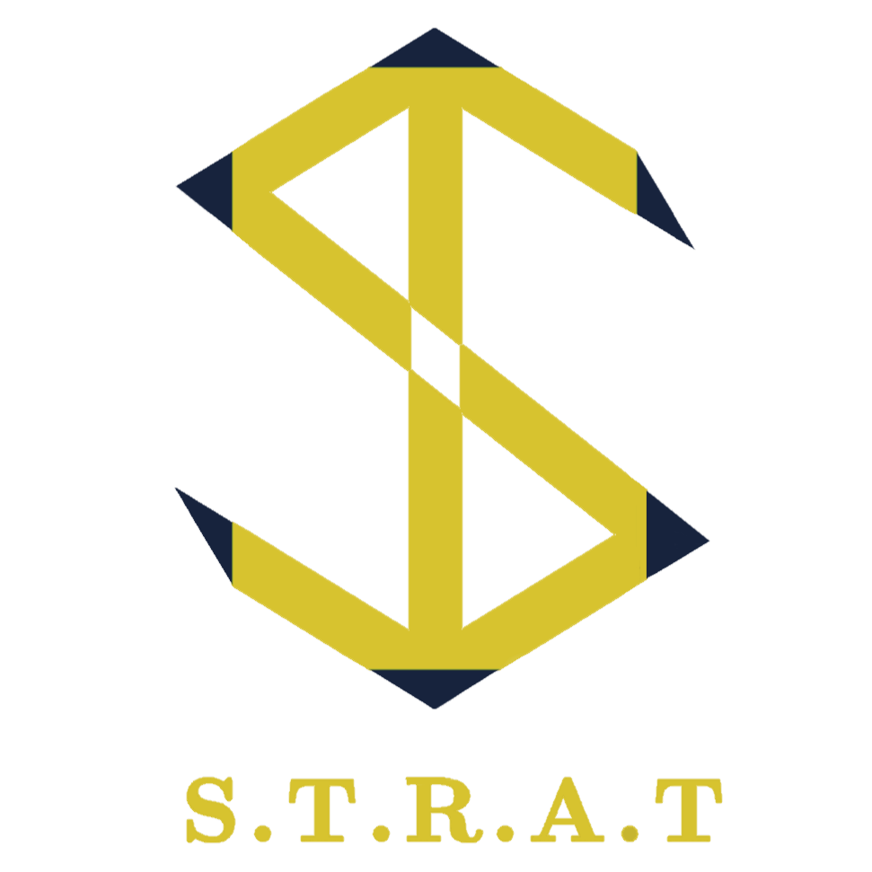

<!-- <!DOCTYPE html>
<html lang="en">

<head>
  <meta charset="UTF-8" />
  <title>STRAT Webpage</title>
  <link rel="stylesheet" href="./styles.css" />
  <link rel="preconnect" href="https://fonts.googleapis.com" />
  <link rel="preconnect" href="https://fonts.gstatic.com" crossorigin />
  <link
    href="https://fonts.googleapis.com/css2?family=Amiri:wght@700&family=Poppins&family=Spectral:wght@700&family=Vollkorn:wght@500&display=swap"
    rel="stylesheet" />
</head>

<body>
  <div class="container">
    <div id="background">
      
    </div>
    <div class="logo-background">
      
    </div>
    <div class="title-header">
      <h1 class="title1">STRAT</h1>
      <h1 class="title2">Business Solutions</h1>
    </div>
    <div class="block"></div>
    <div class="navbar">
      <ul class="navbar-nav">
        <button class="HomeBtn Tab active">Home</button>
        <button class="ServicesBtn Tab">Services</button>
        <button class="SolutionsBtn Tab">Solutions</button>
        <button class="ClientsBtn Tab">Clients</button>
        <button class="SocialBtn Tab">Social</button>
        <button class="ContactBtn Tab">Contact</button>
      </ul>
    </div>

    <div class="Home">
      <div class="AboutUs">
        <h2>About Us:</h2>
        <p>
          Welcome to STRAT, where we go beyond the ordinary to refine what’s
          possible in business solutions. STRAT stands for Software,
          Technology, Refinement, Auromation and Trust - our five pillars that
          form the foundation of our commitment to delivering innovative and
          sustainable solutions that empower businesses to thrive in the
          ever-evolving digital era. <br />
          <br />
          Every business has a story, and we believe in taking the time to
          truely listen and understand yours. Our journey with you begins by
          immersing ourselves in the intricacies of your business, listening
          to your challenges, goals and aspirations. This understanding
          becomes the foundation that guides our efforts to tailor solutions
          perfectly aligned with your vision
        </p>
      </div>
      <div class="Ethics">
        <h3>Our company adheres to the following ethical principles:</h4>
          <ul>
            <li>
              <h4>Deliver Class Solutions</h4>
              <div class="Principle Deliver">
                
                <p>
                  At STRAT, we understand that your business is unique. Therefore,
                  we carefully craft solutions to address your specific challenges
                  and capitalise on your distinct opportunities. We work
                  proficiently and consider all the fine details to deliver a
                  solution that meets its standards. We strategise to ensure that
                  the results of our solutions are promising and engaging to
                  customers. Our commitment and unwavering dedication to
                  delivering nothing short of excellence sets us apart.
                </p>
              </div>
            </li>
            <li>
              <h4>Cooperate and Build Reliability</h4>
              <div class="Principle Cooperate">
                
                <p>
                  Our team members are reliant, dependable and ambitious. We value
                  one another and hold to the standards and ethics of STRAT. We
                  work closely with our clients to ensure they receive our
                  attention and feel valued by us. We engage with them to build
                  lasting relationships. We aim to ensure that our clients and
                  customers positively remember us for our contributions to them.
                </p>
              </div>
            </li>
            <li>
              <h4>Trust Dependant</h4>
              <div class="Principle Trust">
                
                <p>
                  We are honest, transparent and consistent when dealing with
                  customers or clients. We are always in contact with our clients
                  every step of the way, ensuring that the solutions we deliver
                  are precisely the way the client wants them to be. Most
                  importantly, every step we take shows that we provide results
                  along our journey with our clients. This consistency builds
                  trust in our clients. Every hurdle we undergo is also
                  communicated to our client so that our client never feels
                  isolated from the solution and we can resolve the problem
                  together. They are just as in control as we are.
                </p>
              </div>
            </li>
            <li>
              <h4>Bold Leadership</h4>
              <div class="Principle Bold">
                
                <p>
                  Bold leadership is not just a characteristic for us but our
                  guiding force. It means making daring decisions to meet the
                  unique needs of our clients. We embrace the challenges of the
                  ever-changing business landscape with confidence and
                  decisiveness. At every level, bold leadership is our commitment
                  to navigating challenges, exploring new opportunities and
                  delivering straightforward, practical business solutions for our
                  clients.
                </p>
              </div>
            </li>
            <li>
              <h4>Accountability</h4>
              <div class="Principle Accountability">
                
                <p>
                  At STRAT, we believe in taking ownership of our actions and
                  decisions. We hold ourselves to the highest standards, taking
                  responsibility for the promises we make and the outcomes we
                  deliver. By embracing accountability, we are building a culture
                  where challenges become growth opportunities, mistakes become
                  lessons, and every small or big success is a shared achievement.
                  By prioritising accountability, we ensure that our business
                  solutions are effective and built on a foundation of trust and
                  reliability.
                </p>
              </div>
            </li>
            <li>
              <h4>Integrity</h4>
              <div class="Principle Integrity">
                
                <p>
                  At STRAT, we take pride in our unwavering commitment to
                  integrity. We believe in transparent communication, ethical
                  decision-making, and a solid commitment to doing what is right.
                  Our team is dedicated to upholding the integrity of our
                  services, ensuring that our clients experience business
                  solutions and a partnership rooted in trust. At STRAT, integrity
                  is not just a word but the foundation upon which we build
                  lasting, meaningful connections with our clients.
                </p>
              </div>
            </li>
            <li>
              <h4>Systematic and Organized</h4>
              <div class="Principle Systematic">
                
                <p>
                  Our timing and goal orientation are impeccable. We think
                  strongly about our customer's desire to receive a product or
                  service promptly, which makes them enthusiastic to receive more
                  from us. We plan our methods well and in advance for solutions;
                  we always communicate with our client's requirements, ensuring
                  we give them the best solution. Every team member is an asset,
                  contributing their full attention and planning to the task given
                  to them.
                </p>
              </div>
            </li>
            <li>
              <h4>Civility</h4>
              <div class="Principle Civility">
                
                <p>
                  Our culture is one of politeness, equality and uniqueness. We
                  value every team member for their skills, achievements and
                  participation. We ensure that we support each other mentally and
                  emotionally so that we are always headstrong and determined. We
                  make an effort to understand one another so that no one is left
                  feeling isolated or unhappy. The health and contentment of our
                  colleagues are vital to our survival. We do not differentiate
                  between caste, creed, or gender; we are one unit dedicated to
                  serving society.
                </p>
              </div>
            </li>
          </ul>
      </div>
    </div>

    <div class="Services">
      <p class="description">
        At STRAT, we offer you a wide range of high-quality software
        solutions. We aim to ensure every customer and business receives
        our best services and products. We thrive in adding value and
        promoting revenue in companies who work with us. Our relationship
        with you is of primary importance; our second priority is to sell
        software, and our first is to sell our customer care and
        appreciation to you for buying or working with us. Our efforts are
        nothing short of ideal craftsmanship, representation and planning.
        <br/><br/>
        Our products and services span a range of 5 categories, these are:
      </p>
      <div class="Service Digital-Designs">
        <h2>Digital Designs</h2>
        
        <p>
          Digital Design, or graphic design, illustrates a brand, product
          or service. At STRAT, we create visual solutions that suit your
          interests and style. We develop our solutions using software with
          special tools and drawing methods; our most extraordinary
          craftsmanship is our imagination and transformative ideas. We
          allow you to express your ideas with us to formulate a design
          tailored to your specific needs. 
        </p>
      </div>
      <div class="Service Web-Development">
        <h2>Web Development</h2>
        
        <p>
          We can develop outstanding websites to aid your business in
          marketing your products and services. Your website can have a
          variety of user interactions and features, such as sign-up pages,
          chatbots, a visual representation of products, multiple pages or
          tabs, security, descriptions, natural language processing, digital
          content, AI and many other elements. The only limit you have is
          the amount of features you can think of! We will be with you every
          step of the process, ensuring that your website is as attractive
          as possible and you achieve the audience you deserve.
        </p>
      </div>
      <div class="Service Software-Development">
        <h2>Software Development</h2>
        
        <p>
          Regarding the software side, we offer solutions for analytical
          and data-related tasks, backend programming tasks, frontend
          programming tasks, desktop software apps, cloud computing,
          multimedia services, AI and ML services, and data infrastructure.
          Our most notable languages are Python, SQL, C#, Java, JavaScript
          and TypeScript. However, we would be delighted to expand our
          services to other languages should you require us.
          <br/><br/>
          Let us discuss some of the essential solutions we offer here at
          STRAT:
        </p>
        <div class="Slns">
          <div>
            <h4>Analytical and Data-Related Tasks</h4>
            <p>
              These tasks may include the ability to track records and visually
              represent them. We can run an analysis on the software you use
              and provide data that will help ensure the security and popularity
              of your software.
            </p>
          </div>
          <div>
            <h4>Cloud Computing</h4>
            <p>
              At STRAT, we provide networking and storage for our clients.
              This solution helps our clients lower operating costs run their
              infrastructure more efficiently, and scale as their business
              adapts to change.
            </p>
          </div>
          <div>
            <h4>Multimedia Services</h4>
            <p>
              We have the expertise to aid in a company's multimedia growth.
              This operation can be editing and crafting video content or audio,
              as well as modifying images. 
            </p>
          </div>
          <div>
            <h4>AI and ML Services</h4>
            <p>
              If you require software that performs decision-making or improves
              your machine's algorithm over time by constructive learning, we
              have the tools to make it a reality! No task is under our belt.
            </p>
          </div>
          <div>
            <h4>Data Infrastructure</h4>
            <p>
              We can protect, manipulate, and store your data using the finest
              programming methods and housing. You can use this opportunity to
              file your records and keep them organized and under control.
            </p>
          </div>
        </div>
      </div>
      <div class="Service Mobile-Development">
        <h2>Mobile Development</h2>
        
        <p>
          Mobile apps are a common trend in today's day and age. At STRAT, we
          offer you the opportunity to inherit your app, which you can show
          off to people or use to commercialize your business. Our ideas
          range from groceries to parking, communication, maps, policing,
          and many other fantastic ideas you can bring. Revolutionize your
          activities, start your trend and scale your app worldwide.
        </p>
      </div>
      <div class="Service Automation">
        <h2>Automation</h2>
        
        <p>
          At STRAT, we automate and integrate solutions, making them more
          straightforward to navigate; we reduce user interaction and help
          cut out the inner person so that the process of data is much
          smoother and more efficient. We also provide robot process
          automation, which allows the system to take over and handle the
          tasks, making it affordable for businesses who want less effort
          for more work.
        </p>
      </div>
    </div>

    <div class="Solutions">
      <div class="examples">
        
        <p id="p1">
          In this graphic, we have a simple illustration of a child's
          birthday party. We decided to use an animal theme for this invite.
          We printed the words fun and playfully, and the colour scheme looks
          bright and light-hearted. The name of the child and the year they
          will be turning is coloured in a darker tone and sized bigger,
          underlying the person being the reason for the event. A description
          of the location, day, date and time provides information on when
          and where the party will occur.  
        </p>
        
        <p id="p2">
          In this graphic, we illustrate a wedding event that will take
          place for Mr. Amir Singh and Ms. Samira Naidoo. Since this is
          a Hindu wedding, there are elements representing the tradition
          and culture, such as the Om symbol and Ganesha graphic. The
          colours used here are gold and darkened blue, which are
          traditional Hindu wedding colours. We have respectfully
          mentioned the names of the bride and groom's immediate family
          ancestry. We have displayed this event's day, date, time and
          venue. The formatting of the date and the style of the words
          make this specific illustration stand out. It gives the feeling
          of a majestic and immaculate wedding that will take place. 
        </p>
      </div>
    </div>

    <div class="Clients"></div>

    <div class="Social">
      <h2>Visit our YouTube Page</h2>
      <p>
        At STRAT, we are dedicated to transforming your business into a success story.
        Our YouTube channel is your go-to destination for cutting-edge solutions,
        expert advice and strategies designed to maximise your business's potential.
        We release content that not only teaches but inspires our followers. 
        <br/> <br/>
        Become a part of our community and family! Connect with fellow entrepreneurs,
        share insights and build your network. Subscribe, hit the notification bell, 
        and be the first to access exclusive content that will empower you on your journey 
        to success!
      </p>
      <div class="YouTube-Link">
        
        <a href="https://www.youtube.com/channel/UCOpbizzAmUN7BALBgHmEM7w">STRAT YouTube</a>
      </div>
      <div class="Videos">
        <div class="Video1">
          
          <a href="https://www.youtube.com/watch?v=4TMag8exNiM&t=4s">Introduction: STRAT webpage design</a>
        </div>
        <div class="Video2">
          
          <a href="https://www.youtube.com/watch?v=0bHtViqxKso">STRAT Digital Designs</a>
        </div>
      </div>
    </div>

    <div class="Contact">
      <ul class="contact-list">
        <li class="item">
          <p class="c-heading">Address</p>
          
          <p class="description">
            South Africa, KwaZulu-Natal, <br />
            Durban, Durban North <br />
            Remote
          </p>
        </li>
        <li class="item">
          <p class="c-heading">Mobile</p>
          
          <p class="description">+27 78 019 0983</p>
        </li>
        <li class="item">
          <p class="c-heading">Email</p>
          
          <p class="description">
            stratbsolutions@gmail.com <br />
            dashgovender1910@gmail.com
          </p>
        </li>
        <li class="item">
          <p class="c-heading">Follow Us</p>
          <a href="https://web.facebook.com/STRAT.business.sol">
            
          </a>
          <a href="https://www.instagram.com/strat_business_solutions/">
            
          </a>
          <a href="https://twitter.com/DashenGovender1">
            
          </a>
        </li>
      </ul>
    </div>
  </div>

  <script src="index.js" charset="UTF-8"></script>
</body>

</html> -->
